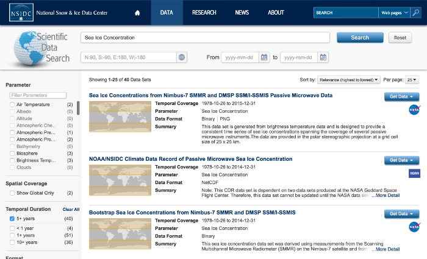
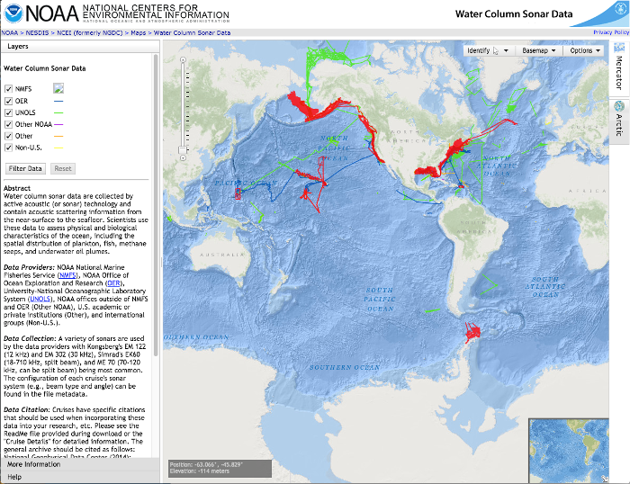

<section class="row" id="portfolio">
  <div class="col-md-offset-1 col-md-10">
    <p>
      These are highlights and projects of interest Brendan has worked on over the years.
    </p>
    <ul class="workExperience">
      <li class="entry">
        <h4>NSIDC Search and Arctic Data Explorer <small>2012 - 2014</small></h4>
        
        <div class="description">
          A large project at the National Snow and Ice Data Center (NSIDC) to provide two interfaces for search and discovery of scientific data. NSIDC Search
          exposes NSIDC datasets. Arctic Data Explorer is an interface for arctic datasets from roughly a dozen
          data centers. Both interfaces share a common code base and depend on shared REST services. Brendan was
          the architect and a full stack developer on this project. Most of the code repositories
          are open source.
          <ul class="links">
            <li><a href="http://nsidc.org/data/search/">http://nsidc.org/data/search/</a></li>
            <li><a href="http://nsidc.org/acadis/search">http://nsidc.org/acadis/search</a></li>
            <li><a href="https://github.com/nsidc/dataset-search-services">https://github.com/nsidc/dataset-search-services</a></li>
            <li><a href="https://github.com/nsidc/search-interface">https://github.com/nsidc/search-interface</a></li>
            <li><a href="https://github.com/nsidc/search-solr-tools">https://github.com/nsidc/search-solr-tools</a></li>
          </ul>
        </div>
      </li>

      <li class="entry">
        <h4>NCEI Common Ingest <small>2015</small></h4>
        <div class="description">NCEI Common Ingest is a data file ingest system that includes file transformations and
          processing. After the 2015 work the system was recognized
          as a leading solution in NCEI for data ingest and has been adopted by other NCEI sites for handling data
          ingest. This was made possible by an architectural redesign Brendan lead in 2015, which drastically
          reduced the cost (estimated 10x) of adding new data streams to the ingest system. NCEI Common
          Ingest is a private project.</div>
      </li>

      <li class="entry">
        <h4>GOES-R Control Segment <small>2016</small></h4>
        
        <div class="description">Real time processing system for GOES-R satellite data, leveraging Apache Storm. This system monitors the
          file system to process incoming data files through roughly 25 separate algorithms. The project coordinates
          when and under what conditions the algorithms are executed, however the algorithms themselves
          where created by scientific domain experts on another team. GOES-R Control Segment is a
          private project.</div>
      </li>

      <li class="entry">
        <h4>Billingsley Custom Software Website <small>2016</small></h4>
        <div class="description">This website is a github pages project using bootstrap.
          <ul class="links">
            <li><a href="https://github.com/billingb/billingb.github.io">https://github.com/billingb/billingb.github.io</a></li>
          </ul>
        </div>

      </li>
    </ul>
  </div>
</section>